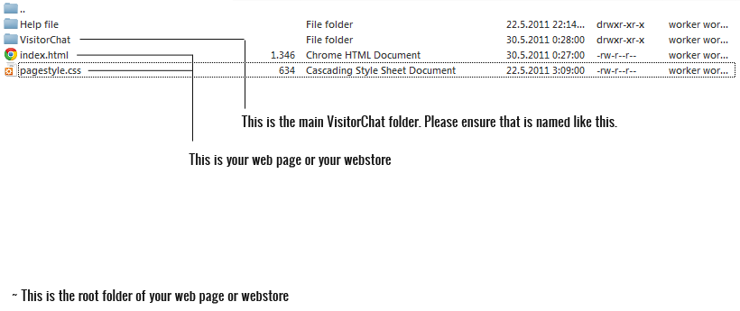
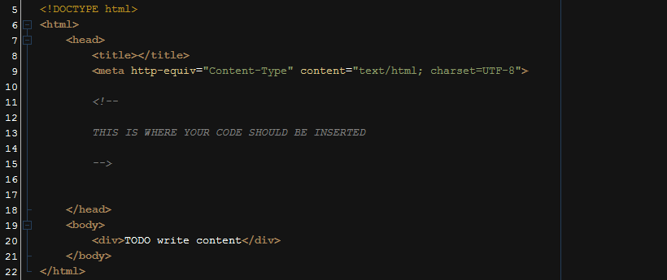
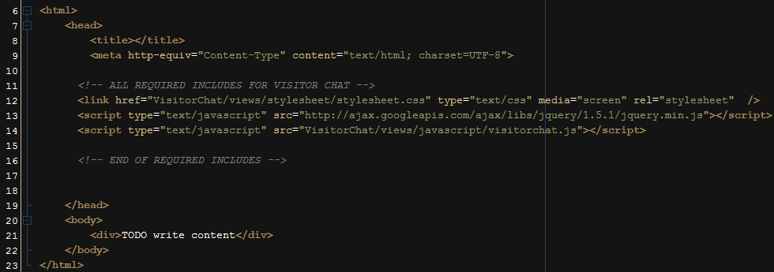

Upload the contents of the "upload" folder to your root web folder like this:

Now that your files are uploaded, navigate to the installer:
http://www.yourdomain.com/VisitorChat/install/
Insert your database credentials: host, username, database and your e-mail address and click install.
In this part, we assume that you have successfully installed VisitorChat on your system. Therefore, your administration interface is allready working. You can navigate to the interface by following path:
http://www.yourdomain.com/VisitorChat/admin/
Default credentials are:
Username: admin
Password: pass
The next and final step is to integrate VisitorChat in any application you want (Website, Shopping cart, etc). Open your webpage template that holds your <head></head> tag with your favorite text editor. This is an example of how the head of the page looks like so you can find it:

We must insert the following javascript and css files:
Let me explain what the following files do.
VisitorChat/views/stylesheet/stylesheet.css is the main css styles file for displaying the client area talking window. Please note that it must be loaded always before the other VisitorChat scripts, because of the DOM (HTML) manipulation. If it is not loaded the first in line, this may result in bad behavior.
http://ajax.googleapis.com/ajax/libs/jquery/1.5.1/jquery.min.js is the main jQuery file. It is required for jQuery to operate. This is linked to googleapis ajax repository, so it should work at all times, but you can download it from this address and link it to your server directory if you wish.
VisitorChat/views/javascript/visitorchat.js is the main VisitorChat javascript file written in jQuery. This is actually just an extension of jQuery main file if you like.
This is the code to include ON EVERY PAGE WHERE YOU WAN'T VISITORCHAT TO SHOW:
This is how your website source code should look afterwards:
